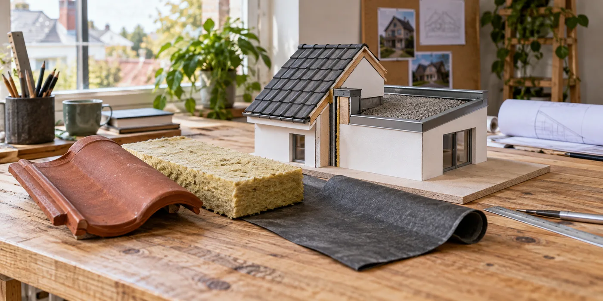

Breng beide eindsituaties in beeld
Laat zien waar het hellende dak op het platte dak aansluit en welke isolatie later wordt toegevoegd. Vraag een schets van de huidige én toekomstige situatie. De aannemer die de eerste fase uitvoert, moet weten welk werk nog volgt. Anders kan een mooie afwerking de tweede fase juist ingewikkelder maken.
Vraag naar voorbereide aansluitingen
Buildwise beschrijft bij sarking en een aansluitend plat dak het belang van een voorbereide aansluiting voor latere werken. Vraag welke voorbereiding bij jouw project nodig is en hoe ze tijdelijk wordt beschermd. De exacte oplossing is een ontwerpvraag voor de vakman; kopieer geen detail zonder te controleren of de bestaande opbouw overeenkomt.

Leg verantwoordelijkheid per fase vast
Beschrijf wie de tijdelijke toestand controleert, welke delen later opnieuw geopend worden en wie de definitieve aansluiting maakt. Bewaar de schets en foto’s in je renovatiedossier. Laat de offerte van fase twee verwijzen naar die informatie. Daarmee verminder je de kans dat een andere aannemer de voorbereiding niet herkent of verkeerd interpreteert.
Wat als een andere aannemer fase twee uitvoert?
Laat de overdracht niet afhangen van een mondeling gesprek dat maanden later vergeten is. Bewaar de gebruikte materialen, de schets van de toekomstige opbouw en foto’s van voorbereide details. Vraag de tweede aannemer die voorbereiding te beoordelen vóór hij zijn uitvoering vastlegt. Hij hoeft de eerdere oplossing niet blind over te nemen; hij moet wel kunnen begrijpen wat al gemaakt is en waarom. Bespreek een eventuele afwijking vóór er onderdelen verdwijnen achter nieuwe afwerking.
De tijdelijke toestand is een eigen ontwerp
Een renovatie in fases heeft meer dan één eindsituatie: er is ook een periode waarin het ene dak vernieuwd is en het andere nog niet. Vraag hoe die toestand wordt uitgevoerd en hoe lang ze volgens de planning blijft bestaan. Een detail dat goed werkt nadat beide fasen klaar zijn, is niet automatisch een voldoende beschrijving van de tussenperiode. Laat de aannemer uitleggen wat tijdelijk zichtbaar of bereikbaar blijft en welke bescherming nodig is. Zo beoordeel je de fasering als een eigen werfkeuze, in plaats van als hetzelfde ontwerp met een later betaalmoment.
Welke maten moeten vroeg bekend zijn?
Bespreek de verwachte opbouw van het tweede dak voordat de eerste fase definitief wordt afgewerkt. De hoogte van nieuwe lagen en de ligging van aansluitende delen kunnen belangrijk zijn voor het ontwerp. Je hoeft die maten niet zelf vast te stellen, maar moet wel weten welke uitgangspunten worden gebruikt. Laat aangeven of de toekomstige keuze al vastligt of nog kan wijzigen. Wanneer een latere offerte een andere opbouw voorstelt, hoort de eerder voorbereide aansluiting opnieuw beoordeeld te worden. Een foto van de voorbereiding is dan nuttig, maar vervangt die beoordeling niet.
Voorkom dat offertes naar elkaar verwijzen
Een veelvoorkomende onduidelijkheid ontstaat wanneer iedere aannemer de aansluiting aan de andere partij toeschrijft. Maak daarom een eenvoudige taakverdeling met voorbereiding, tijdelijke bescherming, definitieve afwerking en controle. Vraag wie het detail beschrijft en wie het tijdens de uitvoering beoordeelt. Laat een overdracht niet alleen bestaan uit een telefoontje op de dag dat fase twee begint. De tweede aannemer moet de gemaakte voorbereiding kunnen bekijken vóór hij zijn werkwijze vastlegt. Anders komt een belangrijke ontwerpvraag pas boven op het moment dat de woning al in de nieuwe werffase zit.
Wat bespreek je als de tweede fase wordt uitgesteld?
Een budget- of planningswijziging kan betekenen dat de tijdelijke toestand langer blijft bestaan. Meld dat aan de partij die ze ontworpen of uitgevoerd heeft. Vraag of aanvullende controle, bescherming of een andere afwerking nodig is. Ga er niet van uit dat een detail onbeperkt tijdelijk kan blijven omdat het de eerste weken geen zichtbaar probleem gaf. Leg het gewijzigde plan vast en bewaar de reactie. Zo krijgt de langere tussenperiode een bewuste beoordeling en weet de volgende aannemer welke toestand hij aantreft wanneer de renovatie uiteindelijk wordt hervat.
Een beslisblad voor de twee fases
Schrijf voor elke fase op welke dakdelen aangepakt worden, welke toekomstige opbouw voorzien is en wie de aansluiting maakt. Zet daarnaast de voorwaarden waaronder het plan opnieuw besproken moet worden. Denk aan een andere isolatiekeuze, gewijzigde dakramen of een uitstel van de tweede fase. Laat de betrokken aannemers datzelfde blad gebruiken. Het hoeft geen uitgebreid technisch rapport te zijn: de officiële detailuitwerking blijft bij de vakmensen. Een overzichtelijk beslisblad zorgt vooral dat de gebruikte uitgangspunten niet verdwijnen tussen twee offertes, twee uitvoerders of twee bouwseizoenen.
Praktische vergelijking
| Moment | Te bespreken punt | Verantwoordelijke vastleggen |
|---|---|---|
| Eerste fase | Voorbereiding en tijdelijke toestand | Ontwerp en uitvoering |
| Tussenperiode | Bescherming en controle | Opvolging bij uitstel |
| Tweede fase | Aansluiten op bestaande voorbereiding | Definitieve afwerking |
| Wijziging | Nieuwe opbouw of planning | Herbeoordeling van het detail |
Een praktisch voorbeeld
De aanbouw blijft nog een winter ongewijzigd. Vraag dan expliciet hoe de aansluiting tijdens die tussenperiode functioneert én hoe ze later wordt afgewerkt. Beide situaties moeten besproken worden.
Illustratief scenario, geen klantcase.
Neem dit mee naar je gesprek
- Schets van beide dakdelen
- Isolatiedikte in de tweede fase
- Bescherming van tijdelijke details
- Foto’s en overdracht aan de volgende aannemer
Veelgestelde vraag
Moeten beide daken tegelijk vernieuwd worden?
Niet altijd. Laat de tussenfase en de toekomstige aansluiting wel vooraf ontwerpen.
Bron en achtergrond
Buildwise: officiële of technische achtergrond bij dit onderwerp ↗
Geraadpleegd op 13 oktober 2026. De praktische checklist en het voorbeeld zijn redactionele uitwerkingen. Fabrikantinformatie geldt voor de beschreven producten; ze is geen algemene garantie voor andere systemen.
Wat betekent dit voor jouw woning?
Gebruik de calculator voor een eerste indicatie. Een vakman beoordeelt jouw situatie en bevestigt de uitvoering en definitieve prijs.
Bekijk de dakwerkencalculator →